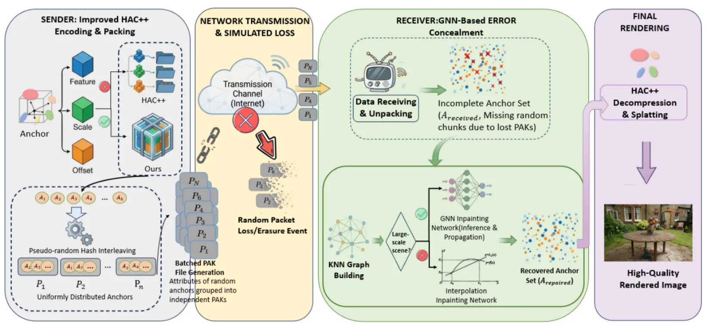
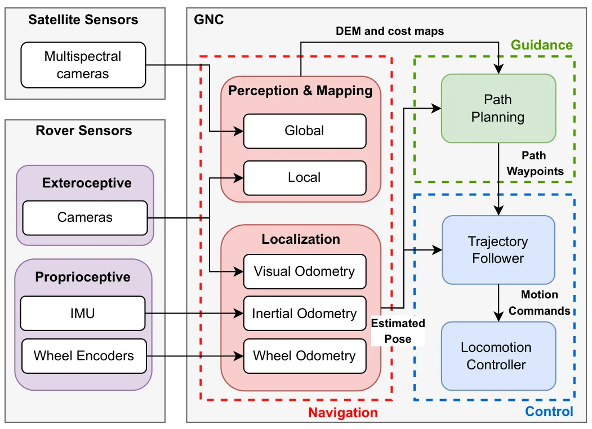
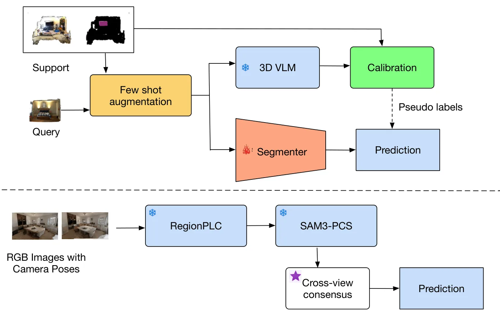
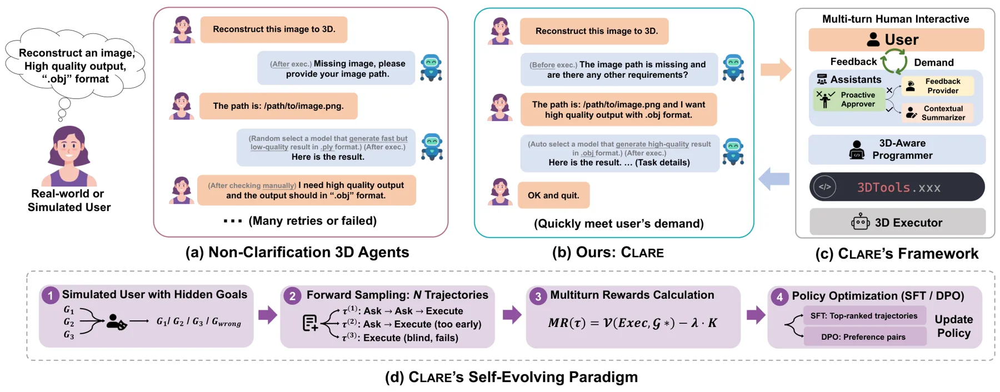

新论文 · 日期 2026-07-21 · score 11 · cs.GR, cs.CV, cs.MM
作者：Yuxuan Tao, Xuerui Ma, Hao Zhang, Chunhua Peng
评分 9.1/10
3DGS模型压缩丢包鲁棒误差隐藏图神经网络
一句话工作总结：将 anchor 属性原子化封装，再结合先验插值与轻量 GNN，降低 3DGS 流媒体在丢包下的渲染崩坏。
3D Gaussian Splatting 及 HAC++ 等压缩方案可实现高保真实时神经渲染，但码流在网络丢包时十分脆弱。本文提出丢包鲁棒的 3DGS 传输与误差隐藏框架：编码端把每个 anchor 的全部属性联合封装，使属性损坏转化为干净的 anchor 缺失，并用分层随机分组把丢包分散到空间；解码端以 Context-Aware Residual Interpolation 建立基线，再用带 hash-gri…
3D Gaussian Splatting (3DGS) and recent compression schemes such as HAC++ enable high-fidelity real-time neural rendering, but their bitstreams are fragile under packet loss during network streaming. Existing…

新论文 · 日期 2026-07-21 · score 9 · cs.RO, cs.AI
作者：Raul Castilla-Arquillo, Carlos Perez-del-Pulgar, Levin Gerdes, Alfonso Garcia-Cerezo, Miguel A. Olivares-Mendez
评分 8.3/10
地形建图RGB-D-T多模态融合可通行性漫游车
一句话工作总结：融合 RGB-D-T 感知和多模态 ViT，在嵌入式平台上生成供漫游车导航使用的地形可通行地图。
非结构环境导航需要可靠识别陡坡、岩石等危险地形。PRISM 以定制传感器套件采集对齐的 RGB、depth 与 thermal 图像，并以新型多模态 vision transformer 网络 OmniUnet 进行语义地形分割。作者用新标注的 BASEPROD 和 LAENTIEC 数据集验证系统，并通过真实野外实验展示应用。系统部署在资源受限嵌入式计算机上，可高效生成可通行地图并直接支持漫游车 Guidance…
Robotic navigation in unstructured environments requires robust situational awareness to safely traverse hazards such as steep slopes and rocky terrain. To address this challenge, perception systems increasing…

新论文 · 日期 2026-07-21 · score 6 · cs.CV
作者：Silas kwabla Gah, Ebenezer Owusu
评分 8.5/10
点云分割开放词汇跨视图一致性语义地图零训练
一句话工作总结：利用有位姿多视图的一致投票协调冻结的 3D 视觉语言先验与提示分割器，实现无需训练和 support 的开放词汇点云分割。
本文研究在无需训练、3D 标签乃至少样本 support 的条件下进行开放词汇点云分割。方法组合冻结的 3D vision-language 模型 RegionPLC 与冻结的可提示概念分割器 SAM3：仅用新类别名称提示 SAM3，从有位姿 RGB 视图把结果提升到三维，再以跨视图一致性确认 novel point。在 ScanNet200 上 novel mIoU 比零训练稠密先验提高 2.6；在更难的 Sca…
Generalized few-shot 3D point-cloud segmentation (GFS-PCS) asks a model to segment a scene into many base classes seen at training time and a set of novel classes. The state of the art reaches novel classes by…

新论文 · 日期 2026-07-21 · score 6 · cs.CV, cs.AI, cs.CL, cs.GR
作者：Xiaoye Zhu, Weixin Li, Junan Huo, Bozhong Wang, Jia Zeng, Yi Yang, Cen Chen, Qi Liu
评分 7.6/10
三维工具多视图重建点云编辑智能体意图澄清
一句话工作总结：在执行多视图重建和点云工具前主动澄清缺失约束，并通过模拟交互学习澄清策略。
三维资产工具链要求精确参数，而用户指令常含歧义。CLARE 将三维任务流水线拆分为四个认知角色，在调用昂贵工具前主动发现并解决信息缺失；其范围覆盖 text-to-3D、单视图重建、多视图重建、点云编辑和后处理。系统通过模拟多轮交互与 Multi-turn Reward 自演化澄清策略，并构建含 620 个歧义、缺失和错误细节场景的 3D-Clarify benchmark。报告单步和多步任务成功率分别为 60.4…
A fundamental intent asymmetry plagues modern 3D asset creation: while state-of-the-art 3D toolchains demand precise, executable parameters, ordinary users typically provide vague, underspecified instructions.…
新论文 · 日期 2026-07-21 · score 4 · cs.GR, cs.CV
作者：Nicole Feng, Ioannis Gkioulekas, Keenan Crane
评分 9/10
点云有符号距离场表面重建环面拟合几何处理
一句话工作总结：用局部环面闭式 SDF 表示带法向点云，在不做全局网格化的情况下实现快速距离查询与隐式表面操作。
本文提出一种可在任意空间分辨率快速逐点计算点云有符号距离的方法。输入为带法向点云，输出为近似底层表面的解析参数化，同时提供重建与距离查询。核心做法是以具有闭式 signed distance function 的环面局部拟合点云，并由预训练网络前馈预测每点曲率和位移参数，无需昂贵全局优化或空间离散化，且易于并行。方法还从理论上统一 signed distance、winding number 与 Poisson s…
We describe a method for computing signed distance to point clouds that allows fast pointwise evaluation at arbitrary spatial resolution. As input, our method takes a point cloud with normals; as output, it pr…

新论文 · 日期 2026-07-21 · score 3 · cs.CV
作者：Mingyang Chen, Zhilu Zhang, Honglei Xu, Renlong Wu, Xiaohe Wu, Wangmeng Zuo
评分 8.6/10
三维重建相机位姿运动去模糊数据采集位姿优化
一句话工作总结：先重建清晰场景，再按模糊帧位姿渲染清晰对应图，用三维几何替代刚性双相机配对采集。
高质量大规模配对数据对学习式去模糊至关重要，但合成模糊缺乏真实感，真实采集又常依赖复杂相机系统。GS-RealBlur 使用手持相机拍摄模糊图像，并用云台密集采集同一场景的清晰图像；随后重建清晰图像的三维表示、标定每个模糊帧位姿，并从该位姿渲染清晰配对图。Blur-aware Pose Refinement 通过外观一致性和质心对齐进一步校正位姿。由此构建的数据集训练出的模型在多个真实去模糊 benchmark 上…
High-quality, large-scale paired data is essential for training learning-based image deblurring models. However, synthetic blurry images generally lack realism, while real-world captured images require complex…